08. 분자 준위 보정 (DFT+Σ)과 길이 수렴
목표
준위 보정된 transport에 앞서 두 가지: (1) scattering region (두 반무한 VSe₃ 전극 사이의 중심 소자)을 더 길게 만들었을 때 conductance가 수렴함을 확인하고, (2) DFT+Σ 보정에 들어갈 B3LYP→vdW-DF2 분자 오비탈 에너지 shift $\Delta_i$를 계산한다.
A. Scattering-region 길이 수렴
60° 헤테로접합을 relax하고, scattering region을 전극당 VSe₃ 3에서 9 unit cells로 확장하며 transport를 재계산했다 (cell-fixed relaxation, vdW-DF2; transport는 전극 k-point grid 100, η = 0.005 eV). 기하 구조, 분자 PDOS, transmission이 모두 수렴한다.
Relaxation — 계면 기하 구조는 7 unit cells에서 수렴
계면 결합 길이와 분자–사슬 gap은 7 cells에서 변화를 멈춘다: 분자–사슬 (Se···VSe₃) gap은 50 → 8 → 1 mÅ로 움직이고 9에서 안정된다.
인터랙티브 — relax된 9-unit-cell 접합 (반무한 VSe₃ 전극 → H-terminated
Hf₂Se₉ bridge → VSe₃; 92 atoms, $L_z$ = 69.9 Å; 드래그로 회전, 스크롤로 확대/축소). Relax된
좌표 (vdW-DF2, cell-fixed)는
10-hetero-h-term-v3-relax/01_relax/rot_060_tight_9uc에서.
| 전극당 VSe₃ unit cells | Hf–Se (Å) | H–Se (Å) | Se···VSe₃ gap (Å) |
|---|---|---|---|
| 3 | 2.620 | 1.516 | 3.633 |
| 5 | 2.619 | 1.515 | 3.583 |
| 7 | 2.621 | 1.516 | 3.575 |
| 9 | 2.621 | 1.516 | 3.576 |
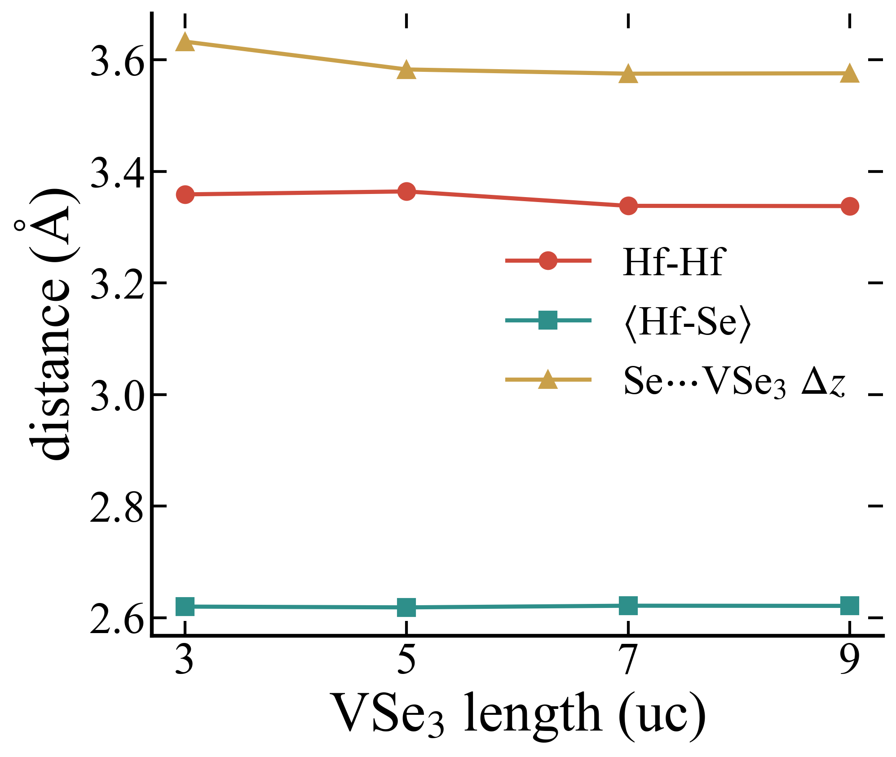
10-hetero-h-term-v3-relax/01_relax에.)분자 PDOS는 길이에 무관
분자 Hf₂Se₉ PDOS는 3 / 5 / 7 / 9 unit cells에 걸쳐 거의 동일하다 — peak 위치가 움직이지 않아 분자 준위가 길이에 무관함을 확인한다.
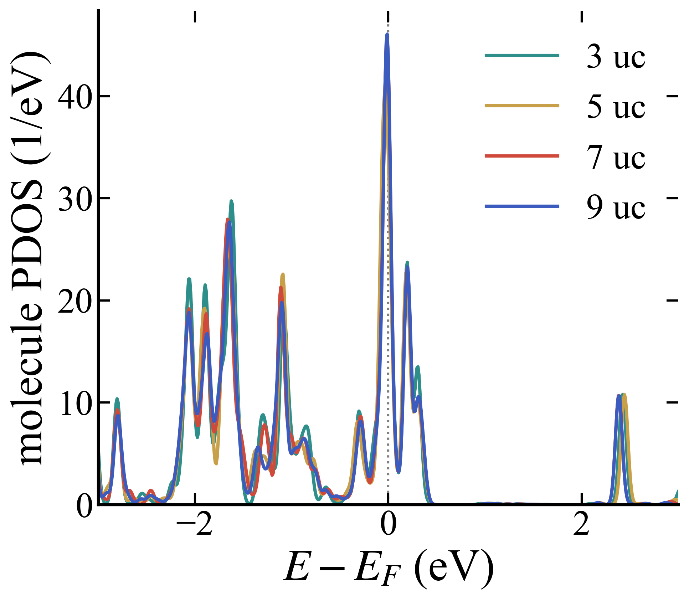
Transmission이 수렴함
Fermi-level transmission은 변하지 않는다 — 9 cells일 때 $T(E_F) = \mathbf{0.348}$, 3일 때 0.354 — 단일 지배 eigenchannel을 가지며, Landauer I–V (zero-bias $T(E)$)는 음의 differential conductance를 보이지 않는다 (공명 터널링, resonant tunnelling).
| 전극당 VSe₃ unit cells | $T(E_F)$ (η = 0.005 eV) | 전달 eigenchannel |
|---|---|---|
| 3 | 0.354 | — |
| 9 | 0.348 | $\tau_0 = 0.989$ (단일 채널) |
Eigenchannel vs 에너지 — 공명 터널링
네 가지 에너지에서 전달 eigenchannel의 실공간 $|\psi|^2$ 등가면(isosurface). $E_F$에서 채널은 분자 전체에 걸쳐 비편재(delocalised)되어 있고 (on-resonance), 에너지에서 멀어지면 분자에서 국소화(localised)/감쇠한다 (off-resonance) — 분자 준위를 통한 공명 터널링의 특징이다.
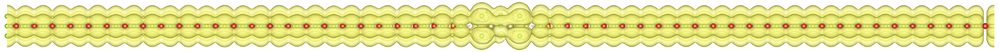
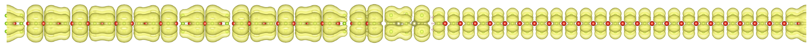
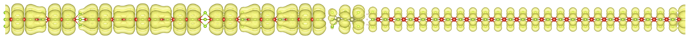
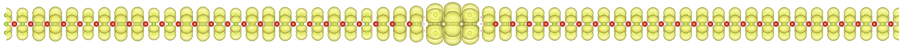
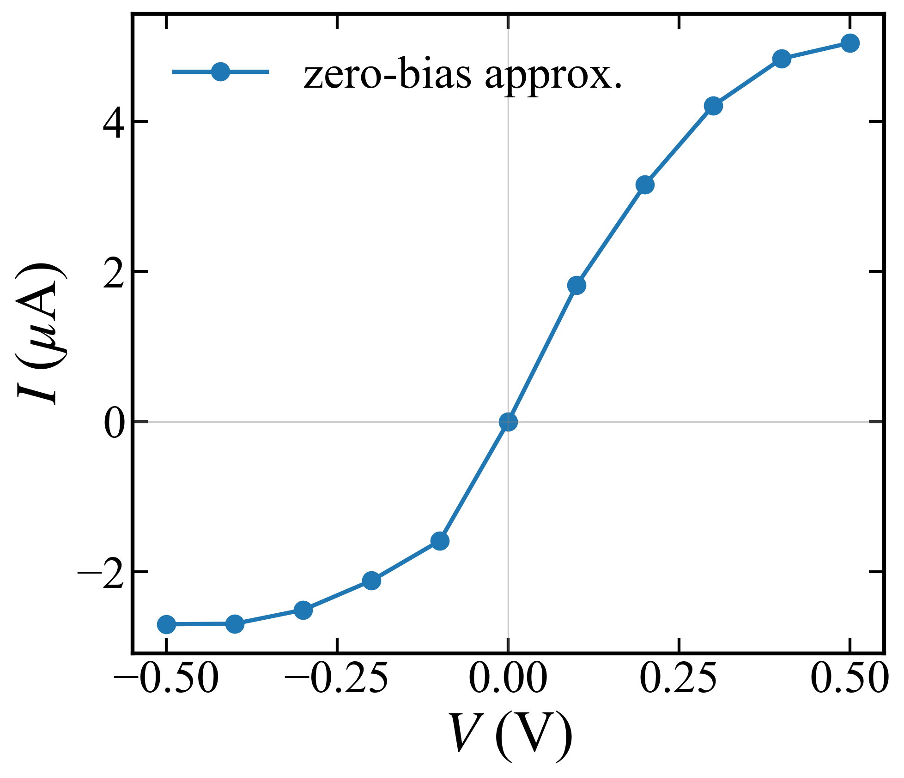
B. B3LYP 분자 준위 보정 (DFT+Σ) — 입력
비-하이브리드 functional인 vdW-DF2는 고립분자 HOMO–LUMO gap을 과소평가하므로 transmission 공명이 $E_F$에 너무 가깝게 놓인다. 보정은 DFT+Σ(DFT + 자체에너지 $\Sigma$) 준위 정렬이다: 각 분자 오비탈 $i$를 $\Delta_i$(transport functional → 정확한 하이브리드로의 gap 개방 shift)만큼 강체 이동시켜 소자 Hamiltonian에 다음과 같이 더한다
$\displaystyle \Delta H = S\,C\,\mathrm{diag}(\Delta_i)\,C^{\dagger}\,S,$
$S$는 overlap, $C$는 고립분자 MO 계수다. H-terminated Hf₂Se₉는 독립된 단위체이고 각 VSe₃ 전극과 약한 반데르발스 거리(Se···chain ≈ 3.6 Å)로 접촉하므로, 고립분자 오비탈이 깨끗한 projector 기저가 된다(in-device MPSH projector는 교차 확인으로 병행 구성; Methods · DFT+Σ 참조). 소자 transport는 vdW-DF2로 통일돼 있어 보정 준위가 같은 functional 기준을 유지한다. 목표 shift $\Delta_i$는 정확한 하이브리드(B3LYP)와 transport functional(vdW-DF2)의 분자 오비탈 에너지 차로 정해지는데, B3LYP는 VASP에만·vdW-DF2는 SIESTA에만 있어 이를 물리적 $\Delta_i$로 합치는 것이 핵심 — Section C에서 다룬다.
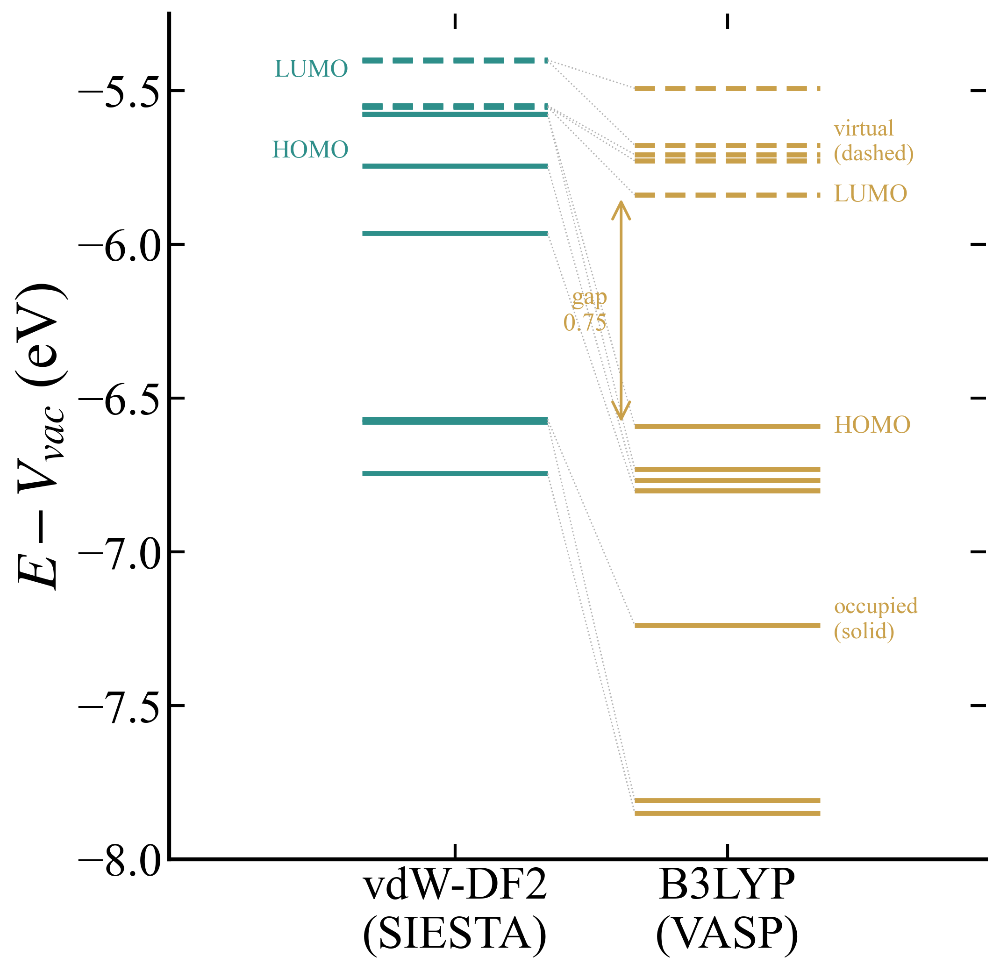
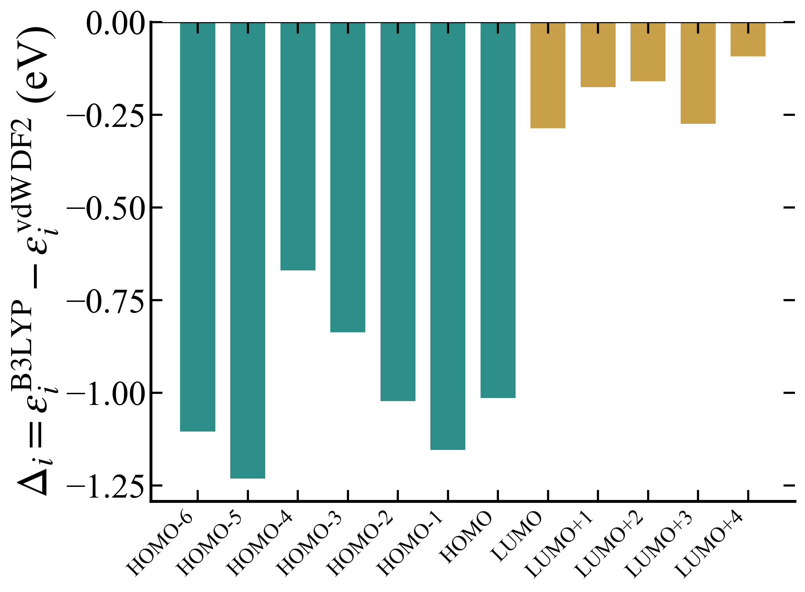
전체 준위 (진공 정렬, $E - V_\text{vac}$, eV; mo_delta_orbital.csv). 마지막 열은
코드 간 직접 차 — 1차 입력이며 Section C의 same-code 구성으로 대체된다:
| 오비탈 | vdW-DF2 (SIESTA) | B3LYP (VASP) | Δ = B3LYP − vdW-DF2 |
|---|---|---|---|
| LUMO+4 | −5.40 | −5.49 | −0.09 |
| LUMO+3 | −5.40 | −5.68 | −0.27 |
| LUMO+2 | −5.55 | −5.71 | −0.16 |
| LUMO+1 | −5.55 | −5.73 | −0.18 |
| LUMO | −5.55 | −5.84 | −0.29 |
| HOMO | −5.58 | −6.59 | −1.01 |
| HOMO−1 | −5.58 | −6.73 | −1.15 |
| HOMO−2 | −5.75 | −6.77 | −1.02 |
| HOMO−3 | −5.96 | −6.80 | −0.84 |
| HOMO−4 | −6.57 | −7.24 | −0.67 |
| HOMO−5 | −6.58 | −7.81 | −1.23 |
| HOMO−6 | −6.75 | −7.85 | −1.10 |
C. DFT+Σ 분자준위 보정
분자 frontier 준위를 Hf₂Se₉ 블록에만 scissor로 이동시킨다(비-self-consistent, TBtrans 단계; $\Delta H = S\,C\,\mathrm{diag}(\Delta_i)\,C^\dagger S$, Methods · DFT+Σ 참조). 이동값 $\Delta_i=\varepsilon_i^{\text{B3LYP}}-\varepsilon_i^{\text{vdW-DF2}}$가 문제의 핵심 — B3LYP는 VASP에만, vdW-DF2는 SIESTA에만 있다.
1. 기존 시도 (v1) — 그리고 왜 틀렸나
v1은 두 코드를 vacuum 정렬로 직접 빼서 $\Delta_i$를 만들었고, device $T(E_F)$ 0.355→0.051, "frontier 갭 0.18 eV"로 보고했다. 미팅에서 보고한 그림이다:
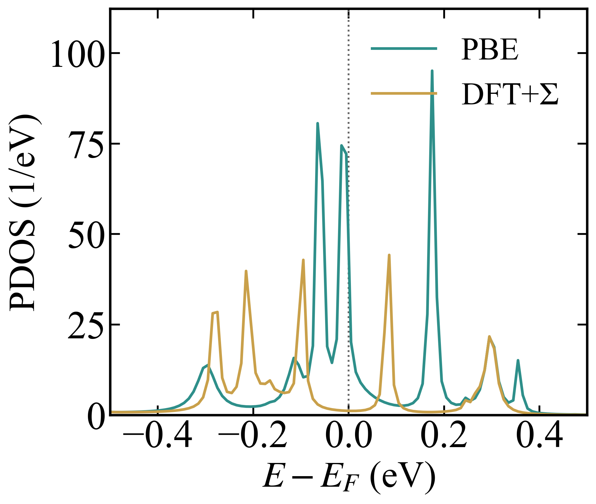 |
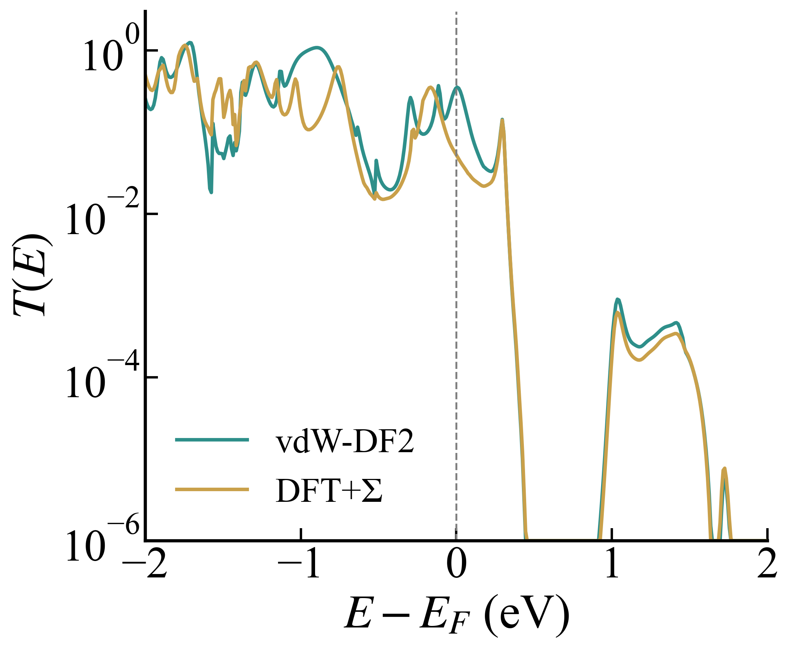 |
왜 틀렸나. 두 코드는 vacuum 정렬로 안 지워지는 ~0.71 eV rigid offset이 있다 (같은 PBE 검증: 전 궤도 +0.71 균일; 명시 valence 전자 수부터 SIESTA 168 vs VASP 74로 다름). 이 offset이 B3LYP 준위 전체를 아래로 밀어, vdW-DF2 frontier 에너지(−5.55, ≈$E_F$)에 오는 B3LYP 준위는 HOMO(−6.59, 한참 아래)가 아니라 비점유 LUMO+3/LUMO+4다:
| 오비탈 | vdW-DF2 ($E-V_{vac}$) | B3LYP ($E-V_{vac}$) | Δ |
|---|---|---|---|
| LUMO+4 | −5.342 | −5.494 | −0.151 |
| LUMO+3 | −5.396 | −5.679 | −0.282 |
| LUMO+1 | −5.545 | −5.729 | −0.185 |
| LUMO | −5.548 | −5.841 | −0.292 |
| HOMO | −5.549 | −6.592 | −1.043 |
| HOMO−1 | −5.572 | −6.732 | −1.160 |
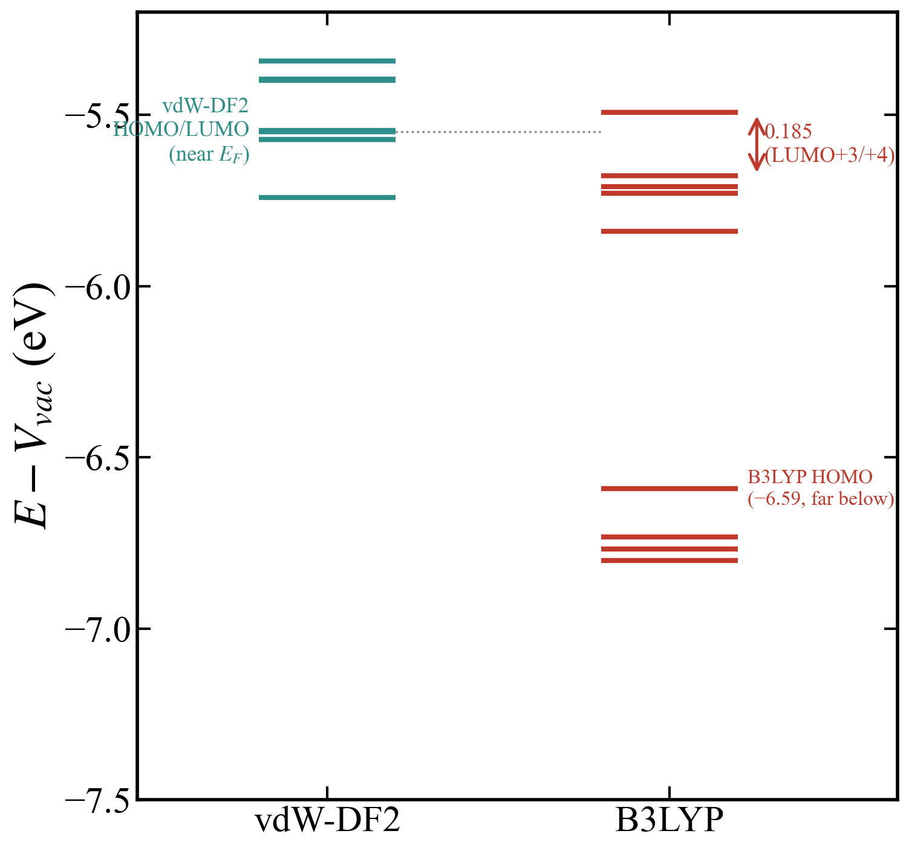
$E_F$를 사이에 두는 B3LYP 준위 쌍은 LUMO+4(−5.494)와 LUMO+3(−5.679), 간격 0.185 eV — 바로 v1의 "0.18"이다. 즉 v1의 "갭"은 HOMO–LUMO 갭이 아니라 $E_F$ 자리로 잘못 온 두 비점유 준위의 간격이었다. 진짜 고립분자 갭은 0.75 eV. 이것이 v1 결과에 대한 직접 반박이다.
2. 수정 (v2) — 각 코드 안에서만 뺌 (공통 PBE 기준)
공통 PBE 기준을 끼워 각 코드 안에서만 빼면 코드 offset이 각 항에서 상쇄된다(둘째 항 위해 SIESTA-PBE single point 하나 추가):
$\displaystyle \Delta_i^{v2}=[\varepsilon^{\text{B3LYP}}-\varepsilon^{\text{PBE}}]_{\text{VASP}}+[\varepsilon^{\text{PBE}}-\varepsilon^{\text{vdW-DF2}}]_{\text{SIESTA}}$
부호가 물리적으로 맞아진다 — 점유 준위는 아래로, 비점유는 위로 — 고립분자 HOMO–LUMO 갭이 0.75 eV로 열린다.
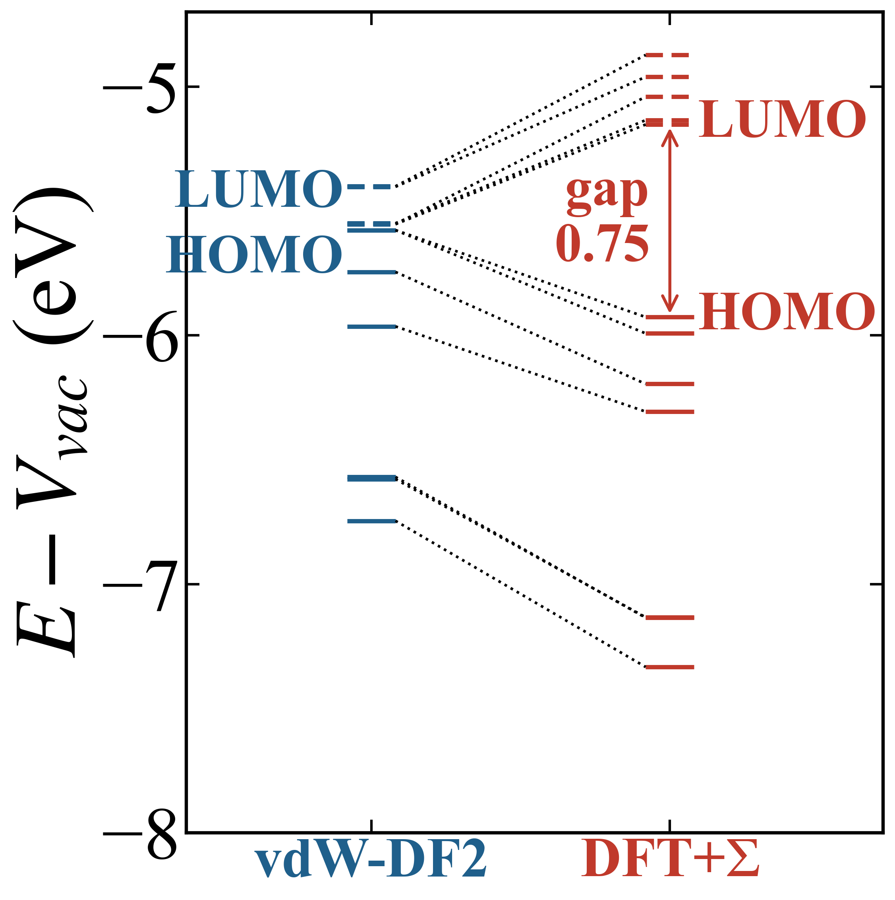
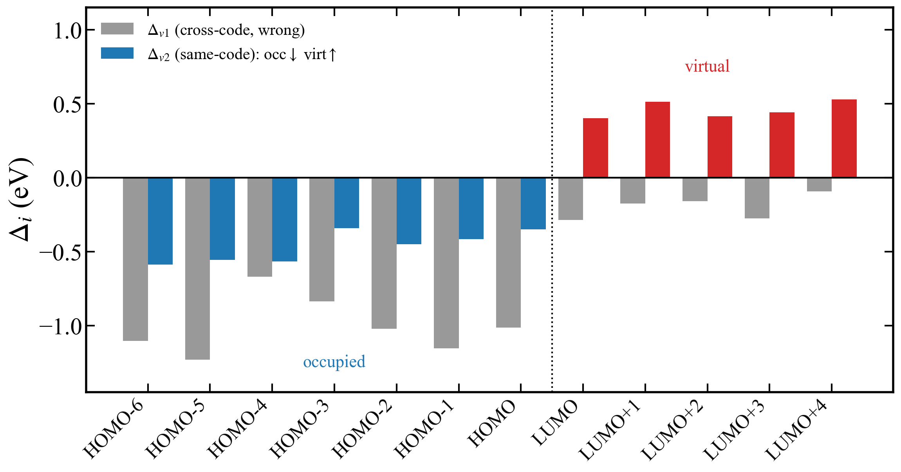
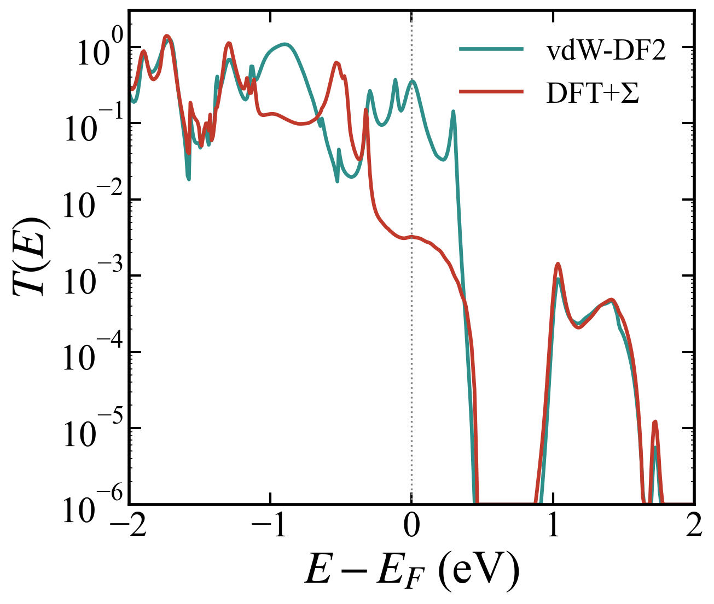
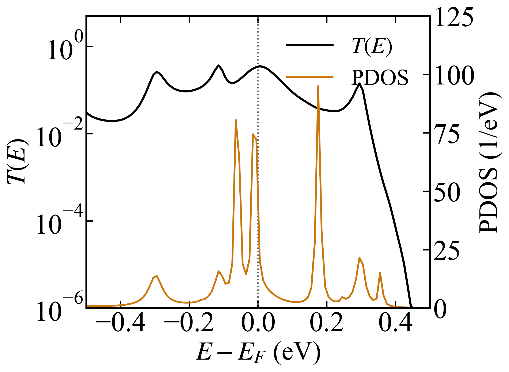 |
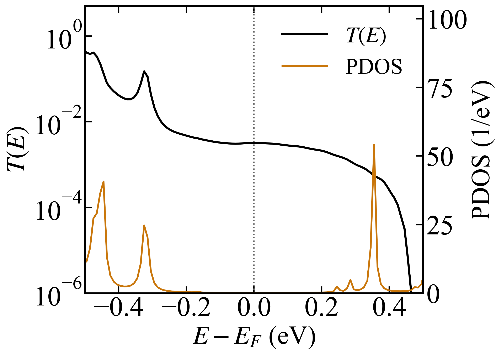 |
3. 보정된 eigenchannel (v2) — HOMO가 전류를 나른다
v2 보정 접합의 전달 eigenchannel $|\psi|^2$을 분자 frontier 준위(mol PDOS의 $E_F$ 최근접 피크: HOMO $-0.325$, LUMO $+0.355$ eV)와 $E_F$에서 계산(η = 10⁻⁴). wire 축(transport)을 가로로 둔 isosurface:
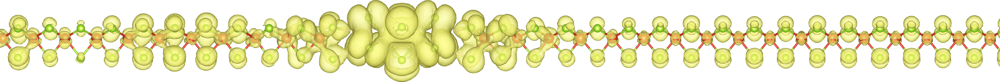
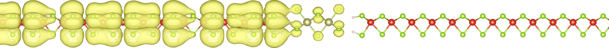
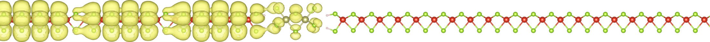
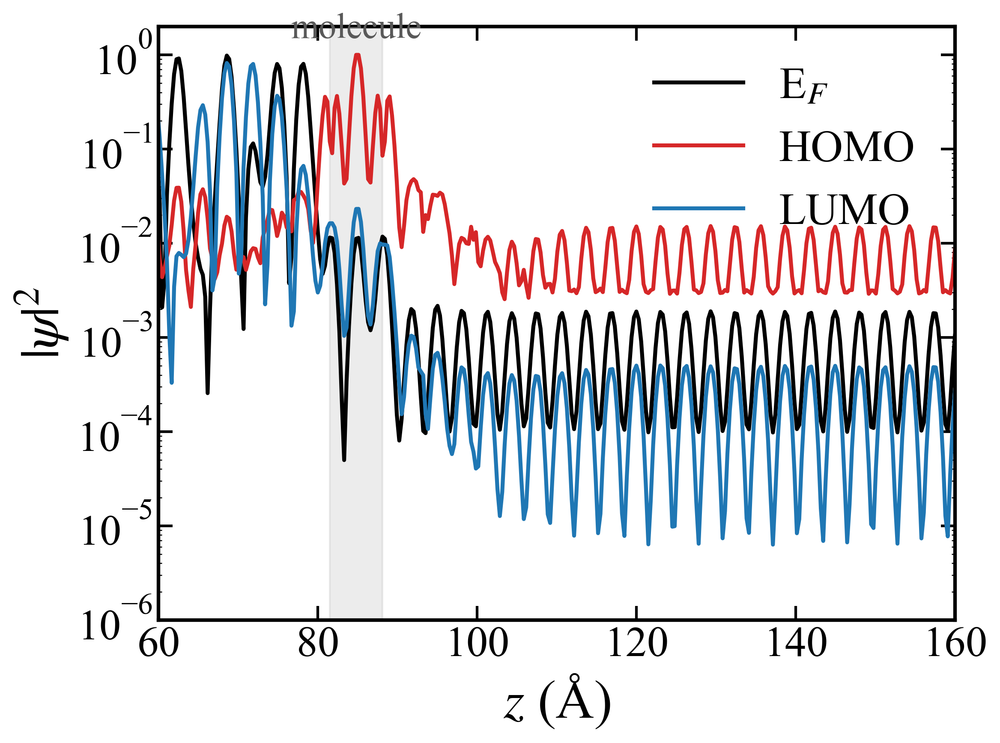
| 에너지 (E$-$E$_F$) | eigenchannel 특성 |
|---|---|
| HOMO ($-0.325$) | 분자에 국재한 단일 지배 채널 — 전도 채널 |
| $E_F$ (0) | 분자에서 막힘 (gap 열림) |
| LUMO ($+0.355$) | 전극 형태 — 전달 무시할 수준 |
논의 / 다음
δH 삽입 경로 (구현 확인): 보정은 TBtrans의 문서화된 내장 hook으로 들어간다 —
$H \leftarrow H + \delta H$이고, TBT.dH는 $\delta H$를 담은 NetCDF 파일을 가리키는
fdf 플래그, sisl write_delta가 그 level-1 정적 파일을 쓴다. SIESTA source patch는
불필요하고, 우리 몫은 분자 projector 행렬 $\Delta H = S\,C\,\mathrm{diag}(\Delta_i)\,C^\dagger S$를
구성해 deltaH.dH.nc로 쓰는 것뿐이다.
- 완료: same-code 구성으로 $\Delta H$ 구축(Section C) 후 길이 수렴 N25_9uc 소자에서 보정 $T(E)$ 계산. 보정으로 고립분자 gap이 0.75 eV로 열리고 분자 공명이 $E_F$에서 벗어나 Fermi 준위 transmission이 억제되며, 3-cell N25_k100 cross-check에도 그대로 전이된다.
- 다음: charge-transfer $\Delta\rho$ 분석. finite-bias chain은 불필요 — δH 보정은 TBtrans post-processing 단계에서 들어가므로 zero-bias $T(E)$로 충분하다.